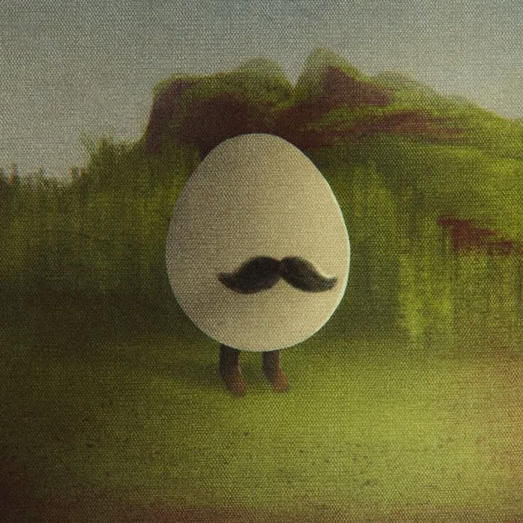
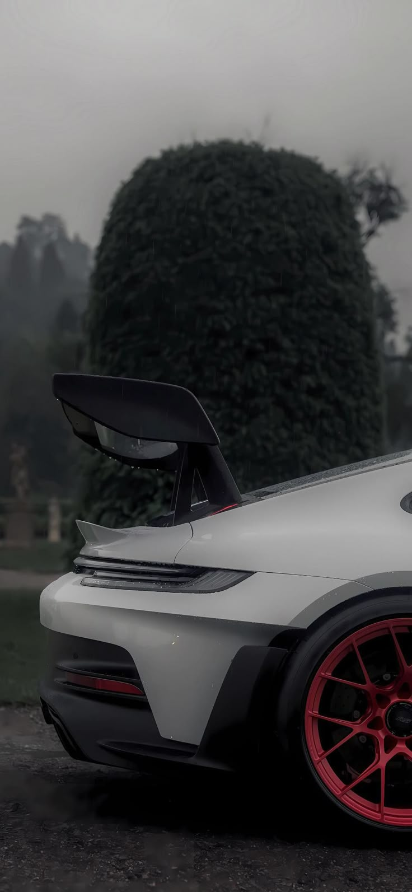
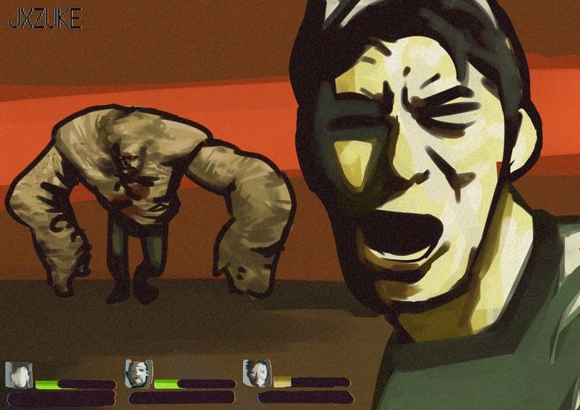
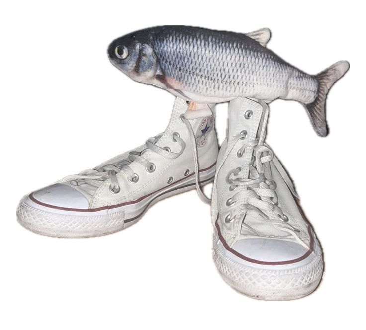
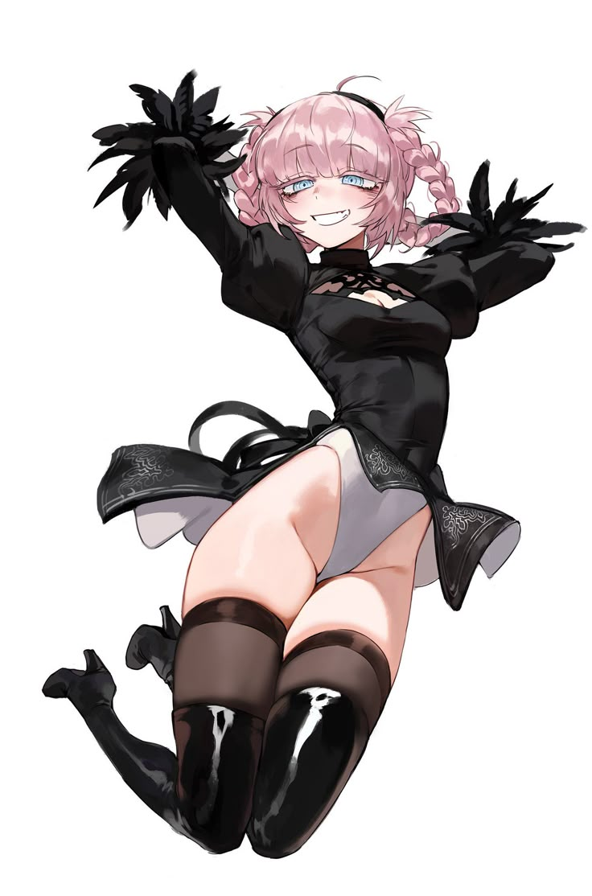

Créditos e Inspiración
Las siguientes imágenes fueron inspirados en recursos disponibles en:
Bueno la razón por la que elegí estas imágenes es porque son paisajes que a mi parecer transmiten vibras nostálgicas.
Collage




